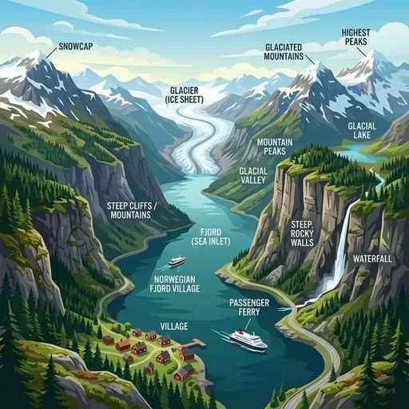
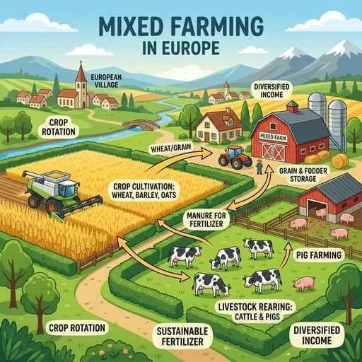
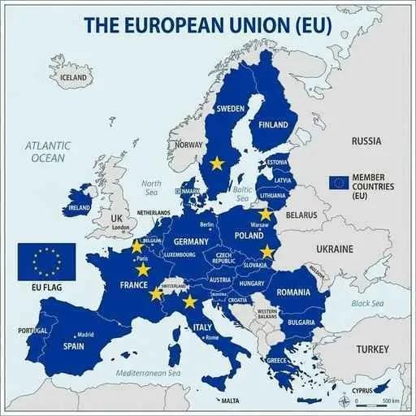

3. ヨーロッパ州とロシア
ヨーロッパ州は、比較的狭い面積の中に多くの国がひしめき合い、EU（ヨーロッパ連合）のもとで深く統合しています。大西洋の暖流による独自の気候と、合理的に発達した各種の農業、さらには北方の寒冷な大国ロシアの特徴まで、重要なポイントをわかりやすく解説します！
1. ヨーロッパの自然環境（地勢と気候）
ヨーロッパは高緯度に位置しながら、豊かな自然と地形の恩恵を受けて、古くから住みやすい環境が整っています。

図1：氷河に削られてできた複雑な入り江「フィヨルド」の美しい景観
① 地形の特徴
- 山脈：南部には、険しく高いアルプス山脈が東西に走っています。アジア州との境界には、南北に走るなだらかなウラル山脈があります。
- フィヨルド：ノルウェーなどのスカンディナビア半島に見られる、氷河によって削り取られてできた複雑な急崖の入り江をフィヨルドと呼びます。
- 国際河川：複数の国をまたいで流れ、関税なしに船が行き来できる川を国際河川（こくさいかせん）と呼びます。アルプス山脈からドイツなどを通り北海へ注ぐライン川は、物資輸送の極めて重要な大動脈です。
② 気候の特徴
- 西岸海洋性気候（せいがんかいようせいきこう）：ヨーロッパの北西部は、高緯度のわりに冬でも温暖です。これは、大西洋を流れる暖流の北大西洋海流の上を、大西洋から温かい空気を運ぶ偏西風（へんせいふう）が一年中吹くためです。
- 地中海性気候（ちちゅうかいせいきこう）：南部の地中海沿岸では、夏は雨が極端に少なく乾燥し、冬にまとまった雨が降る独自の気候が見られます。
- 白夜（びゃくや）：北極圏などの高緯度地域では、夏の期間に夜になっても太陽が沈まない（薄明るいまま）現象が起こります。
2. ヨーロッパの多様な農業
ヨーロッパの農業は、気候や地勢の特徴に合わせて合理的に棲み分け（適地適作）されています。テスト頻出項目です！

図2：アルプス以北の平野で盛んな、穀物栽培と家畜の飼育を組み合わせた「混合農業」
- 混合農業（こんごうのうぎょう）：アルプス山脈以北の平原（フランス、ドイツなど）で盛ん。小麦やライ麦などの穀物栽培と、豚や牛などの家畜の飼育を組み合わせた農業です。
- 酪農（らくのう）：オランダやデンマークなど、北部の比較的冷涼な地域で盛ん。牧草を育てて乳牛を飼育し、バターやチーズなどの乳製品を加工・販売します。オランダには海を干拓して作った肥沃な土地「ポルダー」があり、農業に活用されています。
- 地中海式農業（ちちゅうかいしきのうぎょう）：地中海沿岸（イタリア、スペインなど）で盛ん。夏の乾燥に強いオリーブやブドウ（ワインの原料）、オレンジなどを栽培し、冬の雨を利用して小麦を作ります。
- プスタの農業：ハンガリー周辺の平原（プスタ）では、トウモロコシや小麦の栽培が盛んです。
3. ヨーロッパの統合と主要国
ヨーロッパは、かつての大戦の反省から国境を越えた巨大な協力体制を築いています。

図3：EU（ヨーロッパ連合）の象徴。共通通貨「ユーロ」や国境審査の廃止などが実施されています
① ヨーロッパ連合（EU）の仕組み
政治・経済的な統合を目指して結成されました。旗には協力と調和を示す12個の星が描かれています。加盟国間では共通通貨の「ユーロ」が導入され、入国審査（パスポート提示）なしに行き来できる（シェンゲン協定）など国境の壁が取り払われました。 一方で、近年では比較的所得の高い「西・北ヨーロッパ」と、所得の低い「東・南ヨーロッパ」の経済格差や、西アジアなどからの難民の受け入れ問題、さらにはイギリスがEUから離脱した「ブレグジット（Brexit）」などの新たな課題にも直面しています。
② 主要な国々の特徴
- イギリス：18世紀後半に世界初の産業革命を起こし「世界の工場」と呼ばれました。北海から石油（北海原油）を産出します。
- フランス：EU最大の農業国で、小麦やワインの輸出が有名です。また、トゥールーズなどの都市で、EU諸国で部品を国際分業して作る「航空機（エアバス）」のハイテク産業が盛んです。高速列車TGVも走ります。
- ドイツ：ヨーロッパ最大の工業国。自動車（ベンツ・BMWなど）や化学工業が盛んで、ルール地方はライン川の水運を利用した重化学工業で栄えました。環境意識が高く、酸性雨で立ち枯れた森林（シュヴァルツヴァルト「黒い森」）への対策や、フライブルクに代表される「環境都市（エコシティ）」の開発が進んでいます。
- イタリア：長靴型の半島国。北部のミラノなどはファッション・服飾産業で有名です。
- スイス：EUには加盟せず、「永世中立」を守る姿勢で知られます。
- バチカン市国：イタリア・ローマ市内にあり、世界で最も面積が小さい国です。
4. ロシア連邦の暮らしと産業
世界最大の面積を持つ大国で、大部分が寒冷な気候に覆われています。
- 生活とインフラ：首都はモスクワ。シベリアの永久凍土地域では、暖房で地面が溶けて家が傾かないよう、土台を浮かせた高床式住居の工夫が施されています。東西を結ぶ世界最長のシベリア鉄道が走ります。
- 豊かな農業と地下資源：ウクライナからロシア南西部にかけて、世界一肥沃な黒土帯である「チェルノーゼム」が広がり、巨大な小麦地帯となっています。また、天然ガスや石油などのエネルギー資源が極めて豊富で、ヨーロッパ各国へパイプラインを使って直接輸出されています。
5. 宗教の分布と生活習慣
ヨーロッパの伝統的なキリスト教は、地域ごとに異なる宗派（教派）が信仰されており、テストでも非常に問われやすいです。
- キリスト教の3大宗派の分布：
- プロテスタント：北西部（イギリス、ドイツ北部、北欧など）
- カトリック：南部（イタリア、スペイン、フランスなど）
- 正教会（せいきょうかい）：東ヨーロッパ、ロシア
- その他の暮らし：北欧諸国では、医療や福祉が充実した高い水準の社会保障制度が整備されています。また、夏の期間に数週間の長期休暇をとる「ババンス」が労働者の権利として広く定着しています。
🔥 定期テスト対策・暗記のコツ
① ヨーロッパの3大農業（超頻出！）
「南部＝地中海式農業（オリーブ・ブドウ・小麦）」「アルプス以北＝混合農業（穀物＋豚・牛）」「北方の冷涼地＝酪農（乳牛・乳製品）」の3つを地図上の場所と名前、特徴とセットで絶対に暗記してください！
② 西岸海洋性気候の理由
「高緯度のわりに温かい理由は？」という記述問題に対しては、「暖流の北大西洋海流と、その上を吹く偏西風の影響」と完璧に答えられるように練習しておきましょう！
③ 緯度と時差
ロンドンは日本の北海道（稚内より北）とほぼ同じ緯度です。しかし西岸海洋性気候のおかげで、ロンドンの方が冬の寒さは緩やかです。この「緯度が高いのに温かい」という対比もテストによく出ます！